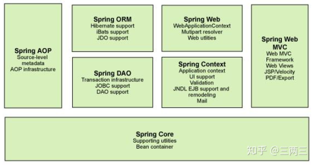
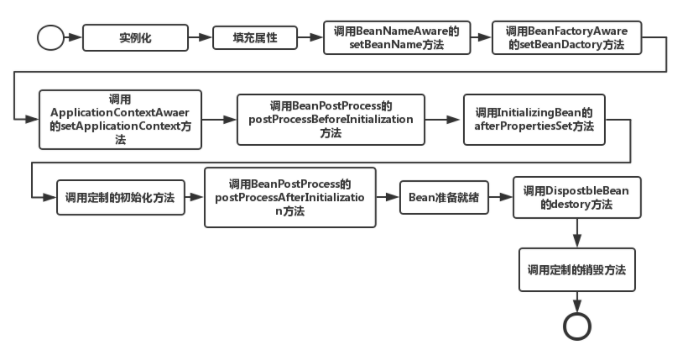

学习计算机过程老有一些所谓高大上的名词, 但是如果理解了会发现很简单。比如IOC控制反转, 反正不论什么名词, 都比数学简单的多。所以不要惧怕它。
这篇文章想讨论下java spring等框架一些特殊控制对象的逻辑, 以及是否适用于C++。
spring
Spring的两个核心概念是IOC（控制反转）和AOP（面向切面编程）。
IOC（控制翻转）是一种编程范式，可以在一定程度上解决复杂系统对象耦合度太高的问题。IOC最常见的方式是DI（依赖注入, 对象依赖容器, 容器注入生成对象），可以通过一个容器，将Bean维护起来，方便在其他地方直接使用，而不是重新new。我理解的一般是通过XML配置文件, 写明对象的成员, 方法依赖关系, IOC容器会自动配置对象不用程序员new。这里的Bean可以视为一种特殊的对象, 有特定的规范(比如具有set.., get..这些), 统一格式方便进行处理。
AOP（Aspect-OrientedProgramming，面向方面编程）, 基本思路是将共同调用的逻辑或责任封装起来，便于减少系统的重复代码(例如多个对象都需要引入日志行为, 鉴权)。一个可行的办法是使用代理, 将业务相同的逻辑逻辑经由代理类分发(代理类可以理解为中介)。换言之, 对象作为参数传入代理类, 代理类对所有对象先执行日志行为, 再调用对象方法, 就实现了公用逻辑(日志)的通用。一般传入对象使用反射字符串, 可以运行时按需运行对象(有反射这样称为动态代理)。但单纯的AOP思想, 完全可以用C++的回调函数实现。
体系结构

- 核心容器：核心容器的主要组件是 BeanFactory，它是工厂模式的实现。BeanFactory 使用控制反转 （IOC） 根据配置构建对象。
- Spring context包括 JNDI、EJB、电子邮件、国际化、校验和调度功能。
- Spring AOP：给 Spring 框架管理的任何对象支持 AOP。
- Spring DAO：JDBC DAO 抽象层提供管理异常处理和不同数据库供应商抛出的错误消息。
- Spring ORM：Spring 框架插入了若干个 ORM 框架
- Spring Web 模块：Web 上下文模块建立在应用程序上下文模块之上，为基于 Web 的应用程序提供了上下文。
- Spring MVC 框架：MVC 框架是一个全功能的构建 Web 应用程序的 MVC 实现
C++ 仿写Java的反射
Java反射的作用是在运行期生成对象, 这常常在web开发中使用。例如程序运行期间可以基于到来的连接来生成对象处理, 相比于静态生成对象这增加了灵活性, 不用开始一直创建这个对象耗费大量资源。当然, 这牺牲了效率。
反射的实现需要解决以下问题
- 运行期创建对象
- 对象可以通过接收字符串创建
Java对以上是支持的, JVM本身支持运行时基于字符串导入.class文件解析创建对象。例如
public class Apple {
private int price;
public int getPrice() {
return price;
}
public void setPrice(int price) {
this.price = price;
}
public static void main(String[] args) throws Exception{
//正常的调用
Apple apple = new Apple();
apple.setPrice(5);
System.out.println("Apple Price:" + apple.getPrice());
//使用反射调用
/// 输入字符串"com.chenshuyi.api.Apple"(表示class路径)
Class clz = Class.forName("com.chenshuyi.api.Apple");
/// 运行时获取方法
Method setPriceMethod = clz.getMethod("setPrice", int.class);
Constructor appleConstructor = clz.getConstructor();
Object appleObj = appleConstructor.newInstance();
setPriceMethod.invoke(appleObj, 14);
Method getPriceMethod = clz.getMethod("getPrice");
System.out.println("Apple Price:" + getPriceMethod.invoke(appleObj));
}
}以上, 可以将Class.forName的字符串参数作为输入, 例如当某个连接到来则输入某个字符串, Class.forName就可以根据此创建对象, 比较灵活。
C++ 是做不到Java反射那么灵活的, 虽然它可以运行时创建对象(在堆上), 但并不能动态的接受字符串创建对象, 它创建的对象都是编译前写好的(不能运行时接受一个字符串来创建)。这一步可以模拟, 最终也能实现运行期间获取元素自动生成对象。
RegisterAction类, 构造函数接受一个字符串和工厂函数(return new object那种), 将它们注册到
<string, func>的map中。这实现了通过字符串调工厂函数进而获得对象。利用宏定义的#, 可以将字面量看成字符串,进而注册RegisterAction。 `RegisterAction g_creatorRegister##className( \
#className,(PTRCreateObject)objectCreator##className)`, 将字符串`#className`, 与字符串代表的类工厂函数绑定。对注册完毕的
<string, func>map, 用户可以直接通过string调用func得到对象。对象是当用户string调用func时创建的,但使用的是new, Java反射不是使用的new创建对象。(Java反射和new都是通过类加载器对.class文件加载进内存中，创建了Class对象。)，java反射按需加载.class文件, C++借用工厂回调函数按需new对象。
/// 函数指针的typedef
typedef void* (*PTRCreateObject)(void);
class ClassFactory {
private:
map<string, PTRCreateObject> m_classMap ;
ClassFactory(){}; //构造函数私有化, 不能外界调用
public:
void* getClassByName(string className);
void registClass(string name, PTRCreateObject method) ;
/// getInstance是静态对象
static ClassFactory& getInstance() ;
};
void* ClassFactory::getClassByName(string className){
map<string, PTRCreateObject>::const_iterator iter;
iter = m_classMap.find(className) ;
if ( iter == m_classMap.end() )
return NULL ;
else
return iter->second() ;
}
/// 注册实例到class_map中, 可以通过字符串调用之
/// 注册的是一个对象获取函数PTRCreateObject, 而不是对象
/// 对象知道使用getClassByName, 将PTRCreateObject强制转换成TestClass才会调用之
/// 显然以上运行时才产生对象, 且根据string获取对象, 反射规则
/// 这种可以实现类似动态的来了一个连接创建对象, 关闭连接释放对象, 不用一开始保留很多对象。因此在spring类似web框架应用广泛
void ClassFactory::registClass(string name, PTRCreateObject method){
m_classMap.insert(pair<string, PTRCreateObject>(name, method)) ;
}
ClassFactory& ClassFactory::getInstance(){
/// 静态对象, 返回静态对象的引用
static ClassFactory sLo_factory;
return sLo_factory ;
}
class RegisterAction{
public:
RegisterAction(string className,PTRCreateObject ptrCreateFn){
printf("ok2\n");
/// 调用ClassFactory, 获取工厂实例,调用registClass注册之
ClassFactory::getInstance().registClass(className,ptrCreateFn);
}
};
/*
#表示字符串化操作符（stringification）。其作用是：将宏定义中的传入参数名转换成用一对双引号括起来参数名字符串。
##表示连接
使用宏定义可以实现字符串形式
*/
#define REGISTER(className) \
className* objectCreator##className(){ \
printf("ok\n"); \
return new className; \
} \
RegisterAction g_creatorRegister##className( \
#className,(PTRCreateObject)objectCreator##className) ///(#className,(PTRCreateObject)objectCreator##className) 初始化一个RegisterAction对象
/// 注意这里只是将函数作为参数用来构造RegisterAction实例
// test class
class TestClass{
public:
void m_print(){
cout<<"hello TestClass"<<endl;
};
};
REGISTER(TestClass);
int main(int argc,char* argv[]) {
TestClass* ptrObj=(TestClass*)ClassFactory::getInstance().getClassByName("TestClass");
//ptrObj->m_print();
}spring的bean

实例化Bean
对于BeanFactory容器，当客户向容器请求一个尚未初始化的bean时，或初始化bean的时候需要注入另一个尚未初始化的依赖时，容器就会调用createBean进行实例化。设置对象属性（依赖注入）
实例化后的对象被封装在BeanWrapper对象中，并且此时对象仍然是一个原生的状态，并没有初始化。紧接着，Spring根据BeanDefinition中的信息进行依赖注入。注入Aware接口
紧接着，Spring会检测该对象是否实现了xxxAware接口，并将相关的xxxAware实例注入给bean。当经过上述几个步骤后，bean对象已经被正确构造，但如果你想要对象被使用前再进行一些自定义的处理，就可以通过BeanPostProcessor接口实现。
C++ AOP
- 基本思路是传递一些切片类型作为都执行的, 例如日志类等。这些可以放在模板类型参数中
- 然后再形参里传递要执行的函数。中间经过代理类整合成正常的函数。
以下代码涉及一些C++高级特性
auto check(int) ->decltypestd::declval<U>().member, 可以调用U类的成员函数std::is_same<decltype(check<T>(0)),std::true_type>::value, 比较，类型是否相同, 相同::value为truetypename std::enable_if<HasMember_before<T, Args...>::value && HasMember_after<T, Args...>::value>::type, std::enable_if
CppAop.hpp
#ifndef __CPPAOP_H__
#define __CPPAOP_H__
#include <iostream>
namespace CppAop {
/* std::declval返回一个类型的右值引用, 并可以访问模板类的成员函数
std::is_same
位于头文件<type_traits>中, 两个一样的类型会返回true
bool isInt = std::is_same<int, int>::value; //为true
value是 = std::is_same<decltype(check<T>(0)), std::true_type>::value , 也就是decltype(check<T>(0))类型和std::true_type是否相等
check的模板参数为U, 其实就是输入判定的类型参数为int, 返回类型为decltype(std::declval<U>().member(std::declval<Args>()...), std::true_type())
member会被before或after替代
decltype(std::declval<U>().member(std::declval<Args>()...), std::true_type())输入两个参数, 当std::declval<U>().member(std::declval<Args>()...)有效时会输出std::true_type()
struct A { // abstract class
virtual int value() = 0;
};
class B : public A { // class with specific constructor
int val_;
public:
B(int i,int j):val_(i*j){}
int value() {return val_;}
};
int main() {
decltype(std::declval<A>().value()) a; // int a
decltype(std::declval<B>().value()) b; // int b
decltype(B(0,0).value()) c; // same as above (known constructor)
*/
#define HAS_MEMBER(member) \
template <typename T, typename... Args> \
struct HasMember_##member \
{ \
private: \
template <typename U> \
static auto check(int) -> decltype(std::declval<U>().member(std::declval<Args>()...), std::true_type()); \
\
template <typename U> \
static std::false_type check(...); \
\
public: \
enum \
{ \
value = std::is_same<decltype(check<T>(0)), std::true_type>::value \
}; \
};
}
namespace WzAop
{
/// 这里是判断切片类是否有要执行的成员函数, 例如before等。基本思路是使用std::declval<U>()
#define HAS_MEMBER(member) \
template <typename T, typename... Args> \
struct HasMember_##member \
{ \
private: \
template <typename U> \
static auto check(int) -> decltype(std::declval<U>().member(std::declval<Args>()...), std::true_type()); \
\
template <typename U> \
static std::false_type check(...); \
\
public: \
enum \
{ \
value = std::is_same<decltype(check<T>(0)), std::true_type>::value \
}; \
};
/// 宏定义将解折叠, 形成HasMember_before和HasMember_after
HAS_MEMBER(before)
HAS_MEMBER(after)
template <typename Function, typename... Args>
class CppAop
{
public:
CppAop() = default;
/// 拷贝函数被delete
CppAop(const CppAop &) = delete;
CppAop &operator=(const CppAop &) = delete;
/// 用Function赋值给m_func
CppAop(Function &&f) : m_func(std::forward<Function>(f))
{
}
/// std::enable_if 满足条件时类型有效。
/// 只有HasMember_before<T, Args...>::value && HasMember_after<T, Args...>::value都为true有效, 显然基于宏定义
/// value = std::is_same<decltype(check<T>(0)), std::true_type>::value, value是bool型
/// type std::enable_if<>::type,
/// type either T or no such member, depending on the value of B
/*
template<bool B, class T = void>
struct enable_if {};
template<class T>
struct enable_if<true, T> { typedef T type; };
*/
/// invoke接受切片类并执行之(aspect.before)
/// m_func是已经提前赋值的执行函数
template <typename T>
typename std::enable_if<HasMember_before<T, Args...>::value && HasMember_after<T, Args...>::value>::type
invoke(Args &&... args, T &&aspect)
{
aspect.before(std::forward<Args>(args)...);
m_func(std::forward<Args>(args)...);
aspect.after(std::forward<Args>(args)...);
}
/// aspect是输入的切片类对象, 类型是T的通用引用
/// Args &&... args 是可被before, m_func等函数执行的参数
template <typename T>
typename std::enable_if<HasMember_before<T, Args...>::value && !HasMember_after<T, Args...>::value>::type
invoke(Args &&... args, T &&aspect)
{
aspect.before(std::forward<Args>(args)...);
m_func(std::forward<Args>(args)...);
}
template <typename T>
typename std::enable_if<!HasMember_before<T, Args...>::value && HasMember_after<T, Args...>::value>::type
invoke(Args &&... args, T &&aspect)
{
m_func(std::forward<Args>(args)...);
aspect.after(std::forward<Args>(args)...);
}
template <typename Head, typename... Tail>
void invoke(Args &&... args, Head &&headAspect, Tail &&... tailAspect)
{
headAspect.before(std::forward<Args>(args)...);
invoke(std::forward<Args>(args)..., std::forward<Tail>(tailAspect)...);
headAspect.after(std::forward<Args>(args)...);
}
private:
Function m_func;
};
/* Cross platform deal: compatibility for visual studio & g++ */
template <typename T>
using identity_t = T;
} /* namespace WzAop */
#endifGenAop.hpp
#ifndef __GENERALAOP_H__
#define __GENERALAOP_H__
#include "CppAop.hpp"
class GeneralAop
{
public:
GeneralAop() = delete;
~GeneralAop() = delete;
/// 模板参数类型为一个Function, 一些args.而且很显然AP表示AOP整合的通用类, 比如日志类
/// 参数Function是要执行的函数, 后面Args是参数
template <typename... AP, typename... Args, typename Function>
static void invoke(Function &&f, Args &&... args)
{
/// 基于要执行的function args生成WzAop对象
/// 向CppAop注册要执行的function
WzAop::CppAop<Function, Args...> asp(std::forward<Function>(f));
/// 向CppAop注册切片类AP, asp是构建好的要执行的function, 基于切片类AP调用invoke
/// WzAop::identity_t 返回AP的类型
asp.invoke(std::forward<Args>(args)..., WzAop::identity_t<AP>()...);
}
};
#endifaop.cc
#include <iostream>
#include <functional>
#include "GenAop.hpp"
void aopTest1(int data)
{
printf("test1...%d\n",data);
}
class AopTest2
{
public:
void test(int data1,std::string data2)
{
printf("test2...%d,%s\n",data1,data2.c_str());
}
};
/// 切片类, Log
class Log
{
public:
void before(int data)
{
printf("log before...%d\n",data);
}
void after(int data)
{
printf("log after...%d\n",data);
}
void before(int data1,std::string data2)
{
printf("log before...%d,%s\n",data1,data2.c_str());
}
void after(int data1,std::string data2)
{
printf("log after...%d,%s\n",data1,data2.c_str());
}
};
/// 切片类Security
class Security
{
public:
void before(int data)
{
printf("security before...%d\n",data);
}
void after(int data)
{
printf("security after...%d\n",data);
}
void before(int data1,std::string data2)
{
printf("security before...%d,%s\n",data1,data2.c_str());
}
void after(int data1,std::string data2)
{
printf("security after...%d,%s\n",data1,data2.c_str());
}
};
int main()
{
/* test1 */
// 调用GeneralAop, Log,Security为AOP部分
GeneralAop::invoke<Log,Security>(&aopTest1, 123456);
printf("------------------------------------------------\n");
/* test2 */
AopTest2 test2;
GeneralAop::invoke<Log,Security>(std::bind(&AopTest2::test,&test2,std::placeholders::_1,std::placeholders::_2),654321,"blablabla");
return 0;
}